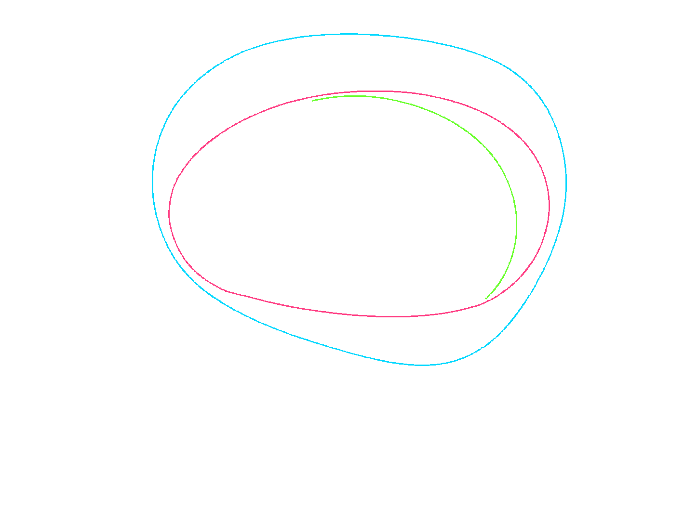
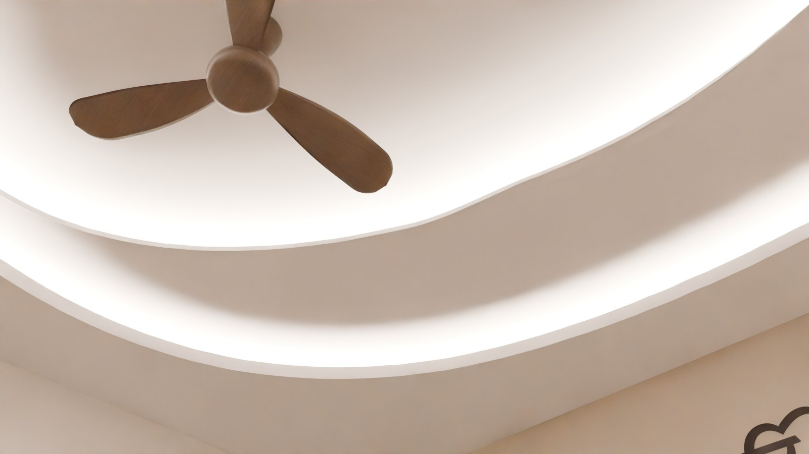
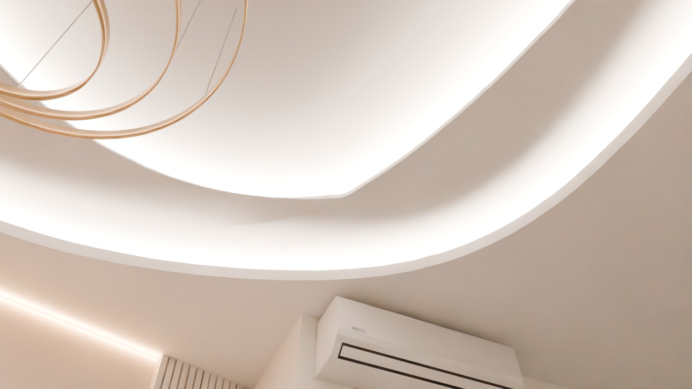

Chandelier off in all comparison views, as in the approved pictures; warm and white use the same camera, exposure and white balance (only the two coves change colour). Fan 5'-0" and chandelier 11'-0" along the back wall, both 7'-4" out, 6'-0" apart (your choice).
Seated eye height, aimed at the two crescent joins (the bright-spot check). White 4000K.


Codex traced the three curves from approved picture 05. The ceiling uses that exact shape at our room's size (one uniform scale, no stretching). Our model's built edges, drawn back into picture 05's frame, were measured against the trace with Codex's checker. This shows the traced outline is kept; it does not certify construction dimensions, ceiling depth or the final look. Two parts of the trace are uncertain in the picture itself (the middle curve at the lower left, the top tip of the crescent), and the crescent's top tip is joined to the middle curve by a smooth curve I drew.
| Curve | Worst gap | Average gap |
|---|---|---|
| Outer edge (blue) | 0.25 px | 0.12 px |
| Middle edge (pink) | 0.00 px | 0.00 px |
| Crescent edge (green) | 0.00 px | 0.00 px |